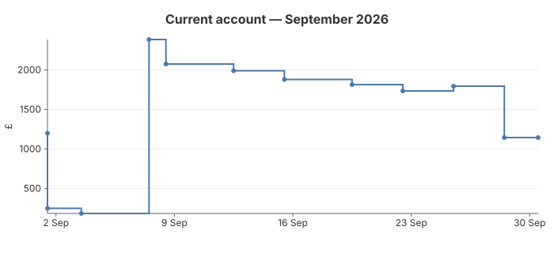

11 — Balance
A running account balance drawn as a step chart. A balance does not drift between transactions: it holds its value until a posting lands, then changes instantly. A straight line between points would invent a gradual change that never happened, so the step chart draws a horizontal hold followed by a vertical jump at each data point.

The code
chart := gogal.NewStepChart(
gogal.WithTitle("Current account — September 2026"),
gogal.WithYTitle("£"),
gogal.WithYFormat("%.0f"),
gogal.WithTimeFormat("2 Jan"),
)
for _, tx := range ledger {
points = append(points, gogal.DataPoint{
Time: tx.date,
Y: tx.balance, // balance after this posting
Label: fmt.Sprintf("%s: £%.0f", tx.desc, tx.balance),
})
}
chart.Add("Balance", points)
NewStepChart takes the same options and data as
NewLineChart; only the path differs. Each point is the value after the event, so the line holds the previous value up to the point's X and then steps to the new one. WithSmooth is ignored.
Temporal axis. Transactions are unevenly spaced, so the default temporal axis places each step at its real date and the long flat runs show exactly how long the balance sat unchanged. Use
WithAxisMode(gogal.Ordinal) to space postings evenly instead.
Running it
task example:11
Outputs SVG to stdout and serves at http://localhost:1350.
API reference
| Function | Purpose |
|---|---|
NewStepChart(opts...) |
Line that holds each value until the next point |
Add / AddXY / AddTimeSeries |
Same series API as line charts |
WithAxisMode(mode) |
Temporal (default) or Ordinal spacing |